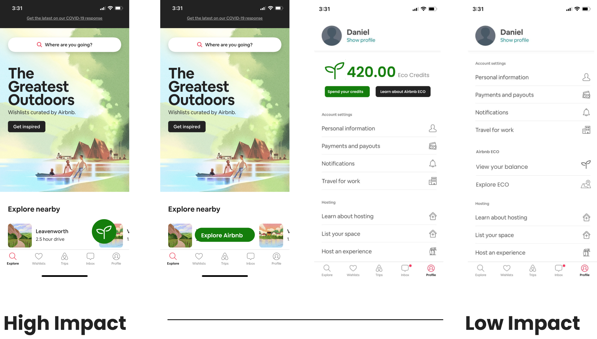

Airbnb Eco helps guests prioritize sustainable travel and rewards environmentally friendly practices while empowering local communities.
UI/UX Design
Research & Wireframing
Mid and High fidelity prototypes
Mockups & Final Presentation
April - June 2021
WWU ID 460 - UX Capstone
This was the open ended brief given to us by Ryan Scott, a design lead at Airbnb and our project manager.
During Spring 2021, WWU and Airbnb teamed up to explore the various ways in which the company could address the various environmental and sustainability concerns that inherently arise from being a key player in the travel industry.
Our team, comprised of four members across various disciplines (Industrial Design, Computer Science, Marketing, and Graphic Design), was tasked with focusing on the guest experience.
Over the course of a little under three months, we produced a scalable, guest-facing solution that would help Airbnb promote environmentally friendly behavior.
As a capstone course, both the brief as well as our methodologies were left fairly open ended, giving us both the freedom and burden of choice.
Airbnb is a pretty big company - not only did we need to address the open ended nature of the prompt, we also needed to make sure our solution would fit in with the company size and vision.
Airbnb already has a comprehensive and thorough DLS in place - this helped the speed of our iterations but also limited our approaches in designing and exploring certain concepts.
We compensated for the open ended nature of the brief by being as comprehensive as possible during our research in order to make sure we were asking the right questions.
After we made sure that we were asking the right questions, we wanted to explore a breadth of answers that would be impactful yet scalable depending on the business needs of the company.
We leveraged the existing DLS to iterate quickly on high fidelity prototypes - this helped us narrow in on our problems extremely early on. Through our iterations, we learned how to adapt to Airbnb’s current mobile design ethos.
We examined existing research done by Airbnb, and conducted both market as well as competitor research to help gauge traveler sentiment on sustainability.
For our market research, we capitalized on pre-existing reports and surveys conducted by companies with a larger reach and more resources than ours for our market research. From these, we found that guests do care about sustainability - it’s just “much less important to consumers than things like price, type of destination, convenience and amenities”.
We also found through competitor research that very few competitors offered ways to guide guests to sustainable stays, and even less made attempts to educate their audience on sustainability principles.
However, Uber stood out with a solid plan for reaching zero-emissions. Additionally, our research on Airbnb indicated that they already had a history of partnering with policymakers and NGO’s. These two programs gave us the original idea for a potential solution that we would ideate on.
Users value sustainability less than other factors such as price, location, amenities, etc.
Airbnb has a huge stake in local community due to the inherent drawbacks of the travel and rental home industry.
We started off with a set of preliminary user journeys for the existing experience, created with the context of sustainability in mind. We wanted to see for ourselves how Airbnb’s current Guest flow was handling sustainability, and tackled this through two perspectives: users that are interested in sustainability, and those that aren’t.
From this, we realized that even though research shows that 88% of Airbnb hosts already incorporate green practices in their listings, it’s currently impossible to find which stays are more or less sustainable.
Neither the listing card nor the amenities have any information on sustainable practices offered by the host. For the environmentally conscious, there’s no way to differentiate listings based off of their environmental impact. And for those that value other factors over sustainability, there’s literally no way to choose to be sustainable.
Users value sustainability less than other factors such as price, location, amenities, etc.
Incentivize sustainable decision making through rewards. We can directly address user’s tendencies to value price over sustainability by allowing payment through eco credits.
Airbnb might disrupt local community due to the inherent drawbacks of the travel industry.
Empower and enrich local communities by partnering with small businesses for discounts through Airbnb Eco Credits, which will increast Guest engagement with those establishments.
We had a good idea of the core flow going into wireframing, but we stayed open minded. While making screens for the listings, we also came up with the idea of creating the ‘hub page’ for all the Eco information. A large part of where our touch points for this new program would come from our wireframing efforts.
In our initial pitch of the idea to the project manager, we discussed where touch points for the hub page would be located. We learned that in a product as large as Airbnb, you had to fight for any amount of space on the home screen or the nav. Luckily, we planned a range from high-impact to low-impact touch point placement, so we were able to discuss freely and come up with a compromise between the last two low-impact screens during the limited meetings that we had.
Making the wireframes to pitch to our project manager gave us solid enough insight into the flow and identity of the product to where we felt comfortable jumping right into high fidelity prototypes. This was made possible due to there being an existing Airbnb DLS (design language system) that we had to adhere to, which meant that we didn’t have to design anything new. Instead, all we had to do was imitate existing assets.
We ran our figma prototype through three rounds of user testing and fixed little issues with affordances and learnability along the way.
The two most important takeaways are as follows:
In typical designer fashion, we wanted to solve all of our problems with pretty badges or clever visual design. Our first round of user testing showed us that sometimes it’s better to just keep it simple with the copy writing and make affordances abundantly and unambiguously known.
After changing our copy, our second round of testing saw a 100% success rate (5/5) with tasks involving that change, which was a marked improvement from before.
During one key user test, a participant noted that certain test scenarios were unrealistic - not a lot of people are just lounging around at small shops and think to pull out the Airbnb app for discounts. These same participants didn’t know that Airbnb Experiences were a thing either.
We realized quickly that we would have to provide onboarding steps to inform users of the new feature.